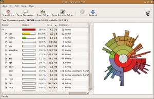
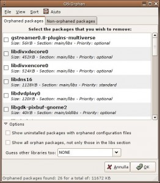
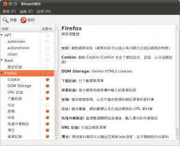

清理 Debian/Ubuntu 儲存空間

筆者是 Debian GNU/Linux 的長年使用者。Debian 使用者有個壞習慣－不主動定時清理系統。因為 Debian 系統實在太穩定，裝好之後終年難得重灌，久而久之系統就會留下佔用空間的廢棄檔案。這些檔案除了使用者個人資料外，不外乎快取、歷史記錄、設定等等。此外還有曾經安裝的軟體，編譯軟體時所裝的開發函式庫等等。這裡分享幾個常用的清理檔案方法。
Personal data
首先是個人檔案。你有許多目錄，需要先找出佔用最多磁碟空間的目錄。這時候你可以透過指令列用 du 來看 disk usage。常用的參數如下：
du --max-depth=1 -x | sort -n
這個指令的意思是查詢當下目錄所佔用的大小，並依照由小到大的順序排列，-x 的意思是只查詢一個檔案系統，方便你找出單一檔案系統中最大的目錄。你也可以用 -h 讓 du 列出。
如果你不是 geek，我推薦使用 Baobao 。它具備圖形化操作界面，並提供派圖呈現磁碟佔用比例，很容易抓出佔用最多空間的目錄或檔案。另外筆者也建議 KDE 使用者用 Filelight 。

▲ 圖1 圖像來源：Disk Usage Analyzer by Fabio Marzocca
依照筆者的使用經驗，佔用最多空間的檔案往往是電子郵件，因為電子郵件中常常附夾了簡報檔、文件等等。如果已經歸檔結案，我通常會把夾檔刪掉，只留下郵件本文存檔。若你使用的郵件收發軟體是 Evolution，筆者推薦使用筆者寫的外掛程式 evolution-remove-attachments ，來整理及備份電子郵件。
apt-tools cache
從最簡單的系統安裝設定開始，系統就已經裝了許多你用不著的檔案。第一個常見的就是各國語系的說明文件與翻譯，絕大多數使用者不會去看其他語言的說明文件，像是我從來沒讀過法文、甚至日文、韓文的 man pages ，也不會使用這些語系的使用界面。而大部分軟體因為國際化的關係，往往裝了數國翻譯，如果是 OpenOffice、GNOME 或 KDE 這些大型軟體計劃，佔用的空間還不少呢。這時，推薦使用者安裝 localepurge 來移除不需要的語系。第一次安裝 localepurge 時，系統會問你要保留哪些語系，回答過一次後，未來每次透過 apt/aptitude 安裝套件時，它都會自動清理一次。下載後的 deb 安裝檔常常也佔用很大空間，特別是 OpenOffice、Xorg、kernel 等等。如果你常常升級系統，不知不覺系統就會存下很多暫存的 deb 安裝檔。這時，你可以用 apt-get 來清除它們。
# apt-get autoclean
# apt-get clean
其中 autoclean 是清掉舊版的 deb，系統會保留一份最新版本安裝檔。我個人都使用 autoclean 指令，以免發生意外的時候，沒有最新版本的 deb 檔可以重新安裝。一般使用者可以直接以 clean 清除快取。
apt-tools dependency
使用 Linux 時，或多或少會自己編譯一些軟體，需要編譯軟體時，就會需要相關的開發函式庫。但常常裝完砍掉後，這些相關的開發函式庫還留在系統中變成軟體孤兒。你除了應該儘量用 apt-get autoremove 或 aptitude 外，也可以用 deborphan 來找軟體孤兒。最常見（也很危險）的用法如下：
# aptitude remove $(deborphan --nice-mode --guess-all)
這樣 deborphan 會推估所有系統中不需要的程式，並全部移除。你也可以用以下指令找出最佔用空間的套件：
$ deborphan -a -n|sort -n
懶惰的話，你也可以裝 GtkOrphan，以圖形化界面管理。

▲ 圖2 使用 GtkOrphan 圖形化管理硬碟空間。
BleachBit (CCleaner for Linux)
雖然新的 Linux 軟體，已經逐漸使用 .local、.cache、.config 等目錄設定方式，但是還是有許多軟體會把快取存在 .config 或自己的目錄中，像是 .gnome2、.firefox 等。結果是使用者很難找到快取檔案。若使用 UbuntuOne、Dropbox 等等雲端備份工具，常常連不重要的快取都一起備份了，費時費錢。上述指令或工具，看似十分繁複，而且只能管理系統檔案。從 Windows 跳船過來的使用者一定會想，是否有類似 CCleaner 的工具，用手指點一點，就可以把垃圾檔案清乾淨？
那麼，筆者建議你使用同時具有 Windows 及 Linux 版本的 BleachBit 。BleachBit 設計了一套相當有彈性的設定描述語言— CleanerML，支援許多常見軟體的清除功能，非常類似 CCleaner，可以自動偵測可清除的軟體列表，接著只要點選需清除的檔案類型，BleachBit 就會自動刪除並計算所騰出空間。沒有 X 圖形界面時，也可以用 bleachbit_cli 指令列。

▲ 圖3
References
如果你很 Geek，可以參考 Ubuntu Wiki 上的 Reducing Disk Footprint ，上面分享了許多縮減系統大小的技巧。另外 Ubuntu 計劃要削減安裝光碟容量大小，未來新版 Ubuntu 11.04 Natty 將會採用，也會影響系統安裝後佔用記憶體的量。